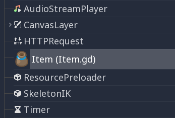
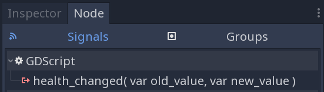

Tham chiếu GDScript
GDScript là một ngôn ngữ lập trình bậc cao, hướng đối tượng, mệnh lệnh và định kiểu dần dần, được xây dựng cho Godot. Nó dùng cú pháp dựa trên thụt lề, tương tự các ngôn ngữ như Python. Mục tiêu của nó là được tối ưu cho và tích hợp chặt chẽ với Godot Engine, mang lại sự linh hoạt cao trong việc tạo và tích hợp nội dung.
GDScript hoàn toàn độc lập với Python và không dựa trên Python.
Lịch sử
Ghi chú
Tài liệu về lịch sử của GDScript đã được chuyển sang mục Câu hỏi thường gặp.
Ví dụ về GDScript
Một số người học tốt hơn khi xem cú pháp, vì vậy đây là ví dụ GDScript trông như thế nào.
# Everything after "#" is a comment.
# A file is a class!
# (optional) icon to show in the editor dialogs:
@icon("res://path/to/optional/icon.svg")
# (optional) class definition:
class_name MyClass
# Inheritance:
extends BaseClass
# Member variables.
var a = 5
var s = "Hello"
var arr = [1, 2, 3]
var dict = {"key": "value", 2: 3}
var other_dict = {key = "value", other_key = 2}
var typed_var: int
var inferred_type := "String"
# Constants.
const ANSWER = 42
const THE_NAME = "Charly"
# Enums.
enum {UNIT_NEUTRAL, UNIT_ENEMY, UNIT_ALLY}
enum Named {THING_1, THING_2, ANOTHER_THING = -1}
# Built-in vector types.
var v2 = Vector2(1, 2)
var v3 = Vector3(1, 2, 3)
# Function, with a default value for the last parameter.
func some_function(param1, param2, param3 = 123):
const local_const = 5
if param1 < local_const:
print(param1)
elif param2 > 5:
print(param2)
else:
print("Fail!")
for i in range(20):
print(i)
while param2 != 0:
param2 -= 1
match param3:
3:
print("param3 is 3!")
_:
print("param3 is not 3!")
var local_var = param1 + 3
return local_var
# Functions override functions with the same name on the base/super class.
# If you still want to call them, use "super":
func something(p1, p2):
super(p1, p2)
# It's also possible to call another function in the super class:
func other_something(p1, p2):
super.something(p1, p2)
# Inner class
class Something:
var a = 10
# Constructor
func _init():
print("Constructed!")
var lv = Something.new()
print(lv.a)
Nếu bạn đã có kinh nghiệm với các ngôn ngữ kiểu tĩnh như C, C++ hoặc C# nhưng chưa từng dùng ngôn ngữ kiểu động, bạn nên đọc bài hướng dẫn này: GDScript: Giới thiệu về ngôn ngữ động.
Định danh
Mọi chuỗi chỉ gồm các ký tự chữ cái (a đến z và A đến Z), chữ số (0 đến 9) và _ đều được coi là định danh. Ngoài ra, định danh không được bắt đầu bằng chữ số. Định danh phân biệt chữ hoa chữ thường (foo khác FOO).
Định danh cũng có thể chứa phần lớn các ký tự Unicode thuộc UAX#31. Điều này cho phép bạn dùng tên định danh viết bằng các ngôn ngữ khác tiếng Anh. Các ký tự Unicode bị coi là "dễ nhầm lẫn" với ký tự ASCII và emoji không được phép dùng trong định danh.
Từ khóa
Dưới đây là danh sách các từ khóa được ngôn ngữ hỗ trợ. Vì từ khóa là các từ dành riêng (token), chúng không thể được dùng làm định danh. Các toán tử (như in, not, and hay or) và tên các kiểu dựng sẵn được liệt kê trong các phần sau cũng là từ dành riêng.
Các từ khóa được định nghĩa trong GDScript tokenizer nếu bạn muốn xem bên trong.
Từ khóa |
Mô tả |
|---|---|
if |
Xem if/else/elif. |
elif |
Xem if/else/elif. |
else |
Xem if/else/elif. |
for |
Xem for. |
while |
Xem while. |
match |
Xem match. |
when |
Được dùng bởi pattern guard trong câu lệnh |
break |
Thoát khỏi vòng lặp |
continue |
Bỏ qua ngay để chuyển sang lần lặp tiếp theo của vòng lặp |
pass |
Dùng ở nơi cú pháp yêu cầu một câu lệnh nhưng không muốn thực thi code nào, ví dụ trong các hàm rỗng. |
return |
Trả về một giá trị từ hàm. |
class |
Định nghĩa một lớp con bên trong (inner class). Xem Inner classes. |
class_name |
Định nghĩa script như một lớp có thể truy cập toàn cục với tên đã chỉ định. Xem Registering named classes. |
extends |
Định nghĩa lớp mà lớp hiện tại sẽ mở rộng. |
is |
Kiểm tra xem một biến có mở rộng một lớp cho trước, hoặc có thuộc một kiểu dựng sẵn cho trước hay không. |
in |
Kiểm tra xem một giá trị có nằm trong chuỗi, mảng, range, dictionary hoặc node hay không. Khi dùng với |
as |
Ép kiểu giá trị sang một kiểu cho trước nếu có thể. |
self |
Tham chiếu đến instance hiện tại của lớp. Xem self. |
super |
Phân giải phạm vi của phương thức cha. Xem Inheritance. |
signal |
Định nghĩa một signal. Xem Signals. |
func |
Định nghĩa một hàm. Xem Functions. |
static |
Định nghĩa một hàm tĩnh hoặc một biến thành viên tĩnh. |
const |
Định nghĩa một hằng số. Xem Constants. |
enum |
Định nghĩa một enum. Xem Enums. |
var |
Định nghĩa một biến. Xem Variables. |
breakpoint |
Công cụ hỗ trợ của trình chỉnh sửa cho breakpoint của debugger. Khác với breakpoint được tạo bằng cách nhấp vào lề (gutter), |
preload |
Tải trước (preload) một lớp hoặc biến. Xem Classes as resources. |
await |
Chờ một signal hoặc một coroutine hoàn tất. Xem Awaiting signals or coroutines. |
yield |
Trước đây được dùng cho coroutine. Được giữ lại làm từ khóa để chuyển đổi. |
assert |
Khẳng định một điều kiện, ghi lỗi nếu thất bại. Bị bỏ qua trong các bản build không phải debug. Xem Assert keyword. |
void |
Dùng để biểu thị rằng một hàm không trả về giá trị nào. |
PI |
Hằng số PI. |
TAU |
Hằng số TAU. |
INF |
Hằng số vô cực. Dùng trong phép so sánh và làm kết quả của các phép tính. |
NAN |
Hằng số NAN (not a number - không phải số). Dùng làm kết quả bất khả của các phép tính. |
Toán tử
Dưới đây là danh sách các toán tử được hỗ trợ và độ ưu tiên của chúng. Mọi toán tử hai ngôi đều kết hợp trái, kể cả toán tử **. Điều này có nghĩa là 2 ** 2 ** 3 bằng (2 ** 2) ** 3. Dùng dấu ngoặc đơn để chỉ định rõ độ ưu tiên bạn cần, ví dụ 2 ** (2 ** 3). Toán tử ba ngôi if/else là kết hợp phải.
Toán tử |
Mô tả |
|---|---|
|
Nhóm (ưu tiên cao nhất) Dấu ngoặc đơn thực ra không phải là toán tử, nhưng cho phép bạn chỉ định rõ độ ưu tiên của một phép toán. |
|
Truy cập chỉ số |
|
Tham chiếu thuộc tính |
|
Gọi hàm |
|
|
x is Nodex is not Node |
Kiểm tra kiểu Xem thêm hàm is_instance_of(). |
|
Lũy thừa Nhân |
|
NOT theo bit |
+x-x |
Đồng nhất / Đổi dấu |
x * yx / yx % y |
Nhân / Chia / Chia lấy dư Toán tử Ghi chú: Các toán tử này có hành vi giống C++, điều có thể gây bất ngờ cho người dùng đến từ Python, JavaScript, v.v. Xem ghi chú chi tiết sau bảng. |
x + yx - y |
Cộng (hoặc Nối) / Trừ |
x << yx >> y |
Dịch bit |
|
AND theo bit |
|
XOR theo bit |
|
OR theo bit |
x == yx != yx < yx > yx <= yx >= y |
So sánh Xem ghi chú chi tiết sau bảng. |
x in yx not in y |
Kiểm tra bao hàm
|
not x!x |
NOT boolean và bí danh không khuyến khích của nó |
x and yx && y |
AND boolean và bí danh không khuyến khích của nó |
x or yx || y |
OR boolean và bí danh không khuyến khích của nó |
|
if/else ba ngôi |
|
|
x = yx += yx -= yx *= yx /= yx **= yx %= yx &= yx |= yx ^= yx <<= yx >>= y |
Gán (độ ưu tiên thấp nhất) Bạn không thể dùng toán tử gán bên trong một biểu thức. |
Ghi chú
Hành vi của một số toán tử có thể khác với những gì bạn mong đợi:
Nếu cả hai toán hạng của toán tử
/đều là int, phép chia nguyên sẽ được thực hiện thay vì chia thập phân. Ví dụ5 / 2 == 2, không phải2.5. Nếu không muốn vậy, hãy dùng ít nhất một literal float (x / 2.0), ép kiểu (float(x) / y), hoặc nhân với1.0(x * 1.0 / y).Toán tử
%chỉ dùng được với int, với float hãy dùng hàm fmod().Với giá trị âm, toán tử
%vàfmod()dùng phép cắt bỏ (truncation) thay vì làm tròn về phía âm vô cực. Điều này có nghĩa là phần dư có dấu. Nếu bạn cần phần dư theo nghĩa toán học, hãy dùng các hàm posmod() và fposmod() thay thế.Các toán tử
==và!=đôi khi cho phép bạn so sánh các giá trị khác kiểu (ví dụ1 == 1.0là true), nhưng trong trường hợp khác có thể gây lỗi runtime. Nếu bạn không chắc về kiểu của các toán hạng, bạn có thể an toàn dùng hàm is_same() (nhưng lưu ý rằng nó chặt chẽ hơn về kiểu và tham chiếu). Để so sánh số thực, hãy dùng các hàm is_equal_approx() và is_zero_approx() thay thế.
Literal
Ví dụ |
Mô tả |
|
Giá trị null |
|
Giá trị boolean |
|
Số nguyên hệ 10 |
|
Số nguyên hệ 16 (thập lục phân) |
|
Số nguyên hệ 2 (nhị phân) |
|
Số thực dấu phẩy động (real) |
|
Chuỗi thông thường |
|
Chuỗi thông thường trong ba dấu nháy |
|
Chuỗi thô |
|
Chuỗi thô (raw) trong ba dấu nháy |
|
|
|
Ngoài ra còn có hai cấu trúc trông giống literal nhưng thực ra không phải:
Ví dụ |
Mô tả |
|
Viết tắt của |
|
Viết tắt của |
Số nguyên và số thực có thể phân tách các chữ số bằng _ để dễ đọc hơn. Các cách viết số sau đây đều hợp lệ:
12_345_678 # Equal to 12345678.
3.141_592_7 # Equal to 3.1415927.
0x8080_0000_ffff # Equal to 0x80800000ffff.
0b11_00_11_00 # Equal to 0b11001100.
Literal chuỗi thông thường có thể chứa các chuỗi thoát (escape sequence) sau:
Chuỗi thoát |
Được hiểu là |
|
Xuống dòng (line feed) |
|
Ký tự tab ngang |
|
Về đầu dòng (carriage return) |
|
Cảnh báo (tiếng bíp/chuông) |
|
Xóa lùi (backspace) |
|
Ngắt trang (formfeed) |
|
Ký tự tab dọc |
|
Dấu nháy kép |
|
Dấu nháy đơn |
|
Dấu gạch chéo ngược |
|
Codepoint Unicode UTF-16 |
|
Codepoint Unicode UTF-32 |
Có hai cách biểu diễn một ký tự Unicode thoát lớn hơn 0xFFFF:
dưới dạng một cặp thay thế UTF-16 (surrogate pair)
\uXXXX\uXXXX.dưới dạng một codepoint UTF-32 duy nhất
\UXXXXXX.
Ngoài ra, dùng \ theo sau là một dấu xuống dòng bên trong chuỗi sẽ cho phép bạn viết tiếp chuỗi ở dòng kế tiếp mà không chèn ký tự xuống dòng vào chính chuỗi đó.
Một chuỗi đặt trong một loại dấu nháy (ví dụ ") có thể chứa loại dấu nháy khác (ví dụ ') mà không cần thoát. Chuỗi trong ba dấu nháy cho phép bạn tránh phải thoát tối đa hai dấu nháy cùng loại liên tiếp (trừ khi chúng nằm sát mép chuỗi).
Literal chuỗi thô (raw) luôn mã hóa chuỗi đúng như nó xuất hiện trong mã nguồn. Điều này đặc biệt hữu ích cho biểu thức chính quy (regular expression). Literal chuỗi thô không xử lý các chuỗi thoát, tuy nhiên nó vẫn nhận ra \\ và \" (\') và thay chúng bằng chính chúng. Vì vậy, một chuỗi có thể chứa dấu nháy trùng với dấu nháy mở, nhưng chỉ khi nó được đặt sau một dấu gạch chéo ngược.
print("\tchar=\"\\t\"") # Prints ` char="\t"`.
print(r"\tchar=\"\\t\"") # Prints `\tchar=\"\\t\"`.
Ghi chú
Một số chuỗi không thể biểu diễn bằng literal chuỗi thô: bạn không thể có số lẻ dấu gạch chéo ngược ở cuối chuỗi hoặc có dấu nháy mở không được thoát bên trong chuỗi. Tuy nhiên, trên thực tế điều này không quan trọng vì bạn có thể dùng loại dấu nháy khác hoặc nối với một literal chuỗi thông thường.
GDScript cũng hỗ trợ chuỗi định dạng.
Annotation
Annotation là các token đặc biệt trong GDScript, đóng vai trò bổ ngữ cho toàn bộ script, một khai báo, một câu lệnh hoặc một vị trí trong mã nguồn. Annotation có thể ảnh hưởng đến cách trình chỉnh sửa Godot và trình biên dịch GDScript xử lý script.
Mọi annotation đều bắt đầu bằng ký tự @ và được xác định bằng một tên. Mô tả chi tiết và ví dụ cho từng annotation có trong tài liệu tham khảo lớp GDScript.
Ví dụ, bạn có thể dùng nó để export một giá trị ra trình chỉnh sửa:
@export_range(1, 100, 1, "or_greater")
var ranged_var: int = 50
Để biết thêm về việc export thuộc tính, hãy đọc bài viết Export trong GDScript.
Bất kỳ biểu thức hằng nào tương thích với kiểu đối số yêu cầu đều có thể được truyền làm giá trị đối số của annotation:
const MAX_SPEED = 120.0
@export_range(0.0, 0.5 * MAX_SPEED)
var initial_speed: float = 0.25 * MAX_SPEED
Annotation có thể được viết mỗi cái một dòng hoặc tất cả trên cùng một dòng. Chúng ảnh hưởng đến câu lệnh tiếp theo không phải là annotation. Annotation có thể có đối số đặt trong dấu ngoặc đơn và phân tách bằng dấu phẩy.
Hai cách sau là như nhau:
@annotation_a
@annotation_b
var variable
@annotation_a @annotation_b var variable
Annotation @onready
Khi dùng node, việc muốn giữ tham chiếu đến các phần của scene trong một biến là rất phổ biến. Vì scene chỉ được đảm bảo đã cấu hình xong khi đi vào scene tree đang hoạt động, các node con chỉ có thể lấy được khi Node._ready() được gọi.
var my_label
func _ready():
my_label = get_node("MyLabel")
Việc này có thể hơi rườm rà, nhất là khi node và các tham chiếu bên ngoài tăng lên. Vì vậy, GDScript có annotation @onready, giúp trì hoãn việc khởi tạo một biến thành viên cho đến khi _ready() được gọi. Nó có thể thay đoạn code trên bằng một dòng duy nhất:
@onready var my_label = get_node("MyLabel")
Cảnh báo
Áp dụng @onready cùng bất kỳ annotation @export nào cho cùng một biến sẽ không hoạt động như bạn mong đợi. Annotation @onready sẽ khiến giá trị mặc định được gán sau khi @export có hiệu lực và ghi đè lên nó:
@export var a = "init_value_a"
@onready @export var b = "init_value_b"
func _init():
prints(a, b) # init_value_a <null>
func _notification(what):
if what == NOTIFICATION_SCENE_INSTANTIATED:
prints(a, b) # exported_value_a exported_value_b
func _ready():
prints(a, b) # exported_value_a init_value_b
Do đó, cảnh báo ONREADY_WITH_EXPORT sẽ được tạo ra, và mặc định nó được coi là lỗi. Chúng tôi không khuyến nghị tắt hay bỏ qua cảnh báo này.
Vùng mã
Code region là loại chú thích đặc biệt mà trình soạn thảo script hiểu là vùng có thể thu gọn. Điều này có nghĩa là sau khi viết chú thích code region, bạn có thể thu gọn và mở rộng vùng đó bằng cách nhấp vào mũi tên xuất hiện bên trái chú thích. Mũi tên này nằm trong một ô vuông màu tím để phân biệt với việc thu gọn code thông thường.
Cú pháp như sau:
# Important: There must be *no* space between the `#` and `region` or `endregion`.
# Region without a description:
#region
...
#endregion
# Region with a description:
#region Some description that is displayed even when collapsed
...
#endregion
Mẹo
Để tạo nhanh một code region, hãy chọn vài dòng trong trình soạn thảo script, nhấp chuột phải vào vùng chọn rồi chọn Create Code Region. Phần mô tả của region sẽ được tự động chọn để bạn chỉnh sửa.
Có thể lồng code region bên trong các code region khác.
Đây là một ví dụ sử dụng code region cụ thể:
# This comment is outside the code region. It will be visible when collapsed.
#region Terrain generation
# This comment is inside the code region. It won't be visible when collapsed.
func generate_lakes():
pass
func generate_hills():
pass
#endregion
#region Terrain population
func place_vegetation():
pass
func place_roads():
pass
#endregion
Điều này có thể hữu ích để tổ chức các khối code lớn thành những phần dễ hiểu hơn. Tuy nhiên, hãy nhớ rằng các trình soạn thảo bên ngoài thường không hỗ trợ tính năng này, nên hãy đảm bảo code của bạn vẫn dễ theo dõi ngay cả khi không dựa vào việc thu gọn code region.
Ghi chú
Từng hàm riêng lẻ và các phần thụt lề (như if và for) luôn có thể thu gọn trong trình soạn thảo script. Vì vậy bạn nên tránh dùng code region để chứa chỉ một hàm hoặc một phần thụt lề, vì nó không mang lại nhiều lợi ích. Code region phát huy tốt nhất khi được dùng để nhóm nhiều phần tử lại với nhau.
Nối dòng
Một dòng code trong GDScript có thể được viết tiếp ở dòng sau bằng dấu gạch chéo ngược (\). Thêm một dấu ở cuối dòng và code ở dòng tiếp theo sẽ hoạt động như thể nó nằm ngay chỗ dấu gạch chéo ngược. Đây là một ví dụ:
var a = 1 + \
2
Một dòng có thể được viết tiếp nhiều lần như sau:
var a = 1 + \
4 + \
10 + \
4
Kiểu dựng sẵn
Các kiểu dựng sẵn được cấp phát trên stack. Chúng được truyền theo giá trị. Điều này có nghĩa là một bản sao được tạo ra mỗi lần gán hoặc khi truyền chúng làm đối số cho hàm. Ngoại lệ là Object, Array, Dictionary và các packed array (như PackedByteArray), được truyền theo tham chiếu nên chúng được chia sẻ. Mọi mảng, Dictionary và một số đối tượng (Node, Resource) có phương thức duplicate() cho phép bạn tạo bản sao.
Kiểu dựng sẵn cơ bản
Một biến trong GDScript có thể được gán cho nhiều kiểu dựng sẵn.
null
null là một kiểu dữ liệu rỗng không chứa thông tin và không thể được gán bất kỳ giá trị nào khác.
Chỉ các kiểu kế thừa từ Object mới có thể mang giá trị null (vì vậy Object được gọi là kiểu "nullable"). Các kiểu Variant phải luôn có giá trị hợp lệ, do đó không thể mang giá trị null.
bool
Viết tắt của "boolean", chỉ có thể chứa true hoặc false.
int
Viết tắt của "integer", lưu trữ số nguyên (dương và âm). Nó được lưu dưới dạng giá trị 64-bit, tương đương int64_t trong C++.
float
Lưu trữ số thực, bao gồm cả phần thập phân, bằng giá trị dấu phẩy động. Nó được lưu dưới dạng giá trị 64-bit, tương đương double trong C++. Lưu ý: Hiện tại, các cấu trúc dữ liệu như Vector2, Vector3 và PackedFloat32Array lưu giá trị float 32-bit độ chính xác đơn.
String
Một chuỗi ký tự ở định dạng Unicode.
StringName
Một chuỗi bất biến chỉ cho phép một instance duy nhất cho mỗi tên. Chúng tạo chậm hơn và có thể phải chờ khóa (lock) khi chạy đa luồng. Đổi lại, chúng so sánh rất nhanh, nên rất phù hợp làm khóa của dictionary.
NodePath
Một đường dẫn đã được phân tích sẵn đến một node hoặc thuộc tính của node. Nó có thể dễ dàng được gán từ và sang một String. Chúng hữu ích để tương tác với tree nhằm lấy một node, hoặc tác động lên thuộc tính như với Tweens.
Kiểu vector dựng sẵn
Vector2
Kiểu vector 2D chứa các trường x và y. Cũng có thể truy cập như một mảng.
Vector2i
Giống Vector2 nhưng các thành phần là số nguyên. Hữu ích để biểu diễn các phần tử trong lưới 2D.
Rect2
Kiểu hình chữ nhật 2D chứa hai trường vector: position và size. Ngoài ra còn có trường end bằng position + size.
Vector3
Kiểu vector 3D chứa các trường x, y và z. Cũng có thể truy cập như một mảng.
Vector3i
Giống Vector3 nhưng các thành phần là số nguyên. Có thể dùng để đánh chỉ số các phần tử trong lưới 3D.
Transform2D
Ma trận 3×2 dùng cho các phép biến đổi 2D.
Plane
Kiểu mặt phẳng 3D ở dạng chuẩn hóa, chứa trường vector normal và khoảng cách vô hướng d.
Quaternion
Quaternion là kiểu dữ liệu dùng để biểu diễn phép xoay 3D. Nó hữu ích cho việc nội suy phép xoay.
AABB
Hộp bao căn theo trục (axis-aligned bounding box, hay hộp 3D) chứa 2 trường vector: position và size. Ngoài ra còn có trường end bằng position + size.
Basis
Ma trận 3x3 dùng cho phép xoay và tỉ lệ 3D. Nó chứa 3 trường vector (x, y và z) và cũng có thể truy cập như một mảng các vector 3D.
Transform3D
Transform 3D chứa một trường Basis basis và một trường Vector3 origin.
Kiểu dựng sẵn của engine
Color
Kiểu dữ liệu màu chứa các trường r, g, b và a. Cũng có thể truy cập dưới dạng h, s và v cho hue/saturation/value (sắc độ/độ bão hòa/giá trị).
RID
Resource ID (RID). Các server dùng RID chung để tham chiếu đến dữ liệu không trong suốt (opaque).
Object
Lớp cơ sở cho mọi thứ không phải kiểu dựng sẵn.
Kiểu container dựng sẵn
Array
Chuỗi tổng quát gồm các đối tượng thuộc kiểu bất kỳ, kể cả các mảng hoặc dictionary khác (xem bên dưới). Mảng có thể thay đổi kích thước động. Mảng được đánh chỉ số bắt đầu từ 0. Chỉ số âm được đếm từ cuối.
var arr = []
arr = [1, 2, 3]
var b = arr[1] # This is 2.
var c = arr[arr.size() - 1] # This is 3.
var d = arr[-1] # Same as the previous line, but shorter.
arr[0] = "Hi!" # Replacing value 1 with "Hi!".
arr.append(4) # Array is now ["Hi!", 2, 3, 4].
Mảng định kiểu
Godot cũng hỗ trợ mảng định kiểu (typed array). Khi ghi, Godot kiểm tra giá trị các phần tử có khớp với kiểu đã chỉ định không, nên mảng không thể chứa giá trị không hợp lệ. Bộ phân tích tĩnh của GDScript có tính đến mảng định kiểu, tuy nhiên các phương thức mảng như front() và back() vẫn có kiểu trả về Variant.
Mảng định kiểu có cú pháp Array[Type], trong đó Type có thể là bất kỳ kiểu Variant nào, lớp native hoặc lớp người dùng, hoặc enum. Kiểu mảng lồng nhau (như Array[Array[int]]) không được hỗ trợ.
var a: Array[int]
var b: Array[Node]
var c: Array[MyClass]
var d: Array[MyEnum]
var e: Array[Variant]
Array và Array[Variant] là như nhau.
Ghi chú
Mảng được truyền theo tham chiếu, nên kiểu phần tử của mảng cũng là một thuộc tính của cấu trúc trong bộ nhớ mà biến tham chiếu đến lúc chạy. Kiểu tĩnh của một biến giới hạn những cấu trúc mà nó có thể tham chiếu. Vì vậy, bạn không thể gán một mảng có kiểu phần tử khác, kể cả khi kiểu đó là kiểu con của kiểu yêu cầu.
Nếu bạn muốn chuyển đổi một mảng định kiểu, bạn có thể tạo một mảng mới và dùng phương thức Array.assign():
var a: Array[Node2D] = [Node2D.new()]
# (OK) You can add the value to the array because `Node2D` extends `Node`.
var b: Array[Node] = [a[0]]
# (Error) You cannot assign an `Array[Node2D]` to an `Array[Node]` variable.
b = a
# (OK) But you can use the `assign()` method instead. Unlike the `=` operator,
# the `assign()` method copies the contents of the array, not the reference.
b.assign(a)
Ngoại lệ duy nhất là kiểu Array (Array[Variant]), vì sự tiện lợi cho người dùng và để tương thích với code cũ. Tuy nhiên, các thao tác trên mảng không định kiểu được coi là không an toàn.
Packed array
PackedArray nhìn chung lặp và sửa đổi nhanh hơn so với một Array định kiểu cùng loại (ví dụ PackedInt64Array so với Array[int]) và tốn ít bộ nhớ hơn. Trong trường hợp xấu nhất, chúng được kỳ vọng nhanh ngang Array không định kiểu. Ngược lại, các Array không phải Packed (định kiểu hay không) có thêm các phương thức tiện lợi như Array.map mà PackedArray không có. Tham khảo tài liệu tham khảo lớp để biết chi tiết về các phương thức có sẵn. Array định kiểu nhìn chung lặp và sửa đổi nhanh hơn Array không định kiểu.
Dù mọi Array đều có thể gây phân mảnh bộ nhớ khi trở nên đủ lớn, nếu việc sử dụng bộ nhớ và hiệu năng (tốc độ lặp và sửa đổi) là mối quan tâm và kiểu dữ liệu bạn lưu tương thích với một trong các kiểu Array Packed, việc dùng chúng có thể mang lại cải thiện. Tuy nhiên, nếu bạn không có những mối quan tâm đó (ví dụ kích thước mảng không đạt đến hàng chục nghìn phần tử), dùng Array thông thường hoặc định kiểu có lẽ hữu ích hơn, vì chúng cung cấp các phương thức tiện lợi giúp code dễ viết và bảo trì hơn (và có thể nhanh hơn nếu dữ liệu của bạn cần các thao tác đó nhiều). Nếu dữ liệu bạn sẽ lưu có kiểu đã biết (kể cả các lớp do bạn tự định nghĩa), hãy ưu tiên dùng Array định kiểu vì nó có thể cho hiệu năng lặp và sửa đổi tốt hơn so với Array không định kiểu.
PackedByteArray: Mảng các byte (số nguyên từ 0 đến 255).
PackedInt32Array: Mảng các số nguyên 32-bit.
PackedInt64Array: Mảng các số nguyên 64-bit.
PackedFloat32Array: Mảng các số thực 32-bit.
PackedFloat64Array: Mảng các số thực 64-bit.
PackedStringArray: Mảng các chuỗi.
PackedVector2Array: Mảng các giá trị Vector2.
PackedVector3Array: Mảng các giá trị Vector3.
PackedVector4Array: Mảng các giá trị Vector4.
PackedColorArray: Mảng các giá trị Color.
Dictionary
Container kết hợp, chứa các giá trị được tham chiếu bằng khóa duy nhất.
var d = {4: 5, "A key": "A value", 28: [1, 2, 3]}
d["Hi!"] = 0
d = {
22: "value",
"some_key": 2,
"other_key": [2, 3, 4],
"more_key": "Hello"
}
Cú pháp bảng kiểu Lua cũng được hỗ trợ. Kiểu Lua dùng = thay cho : và không dùng dấu nháy để đánh dấu khóa chuỗi (giúp viết ít hơn một chút). Tuy nhiên, khóa viết theo dạng này không thể bắt đầu bằng chữ số (giống mọi định danh GDScript), và phải là literal chuỗi.
var d = {
test22 = "value",
some_key = 2,
other_key = [2, 3, 4],
more_key = "Hello"
}
Để thêm một khóa vào dictionary hiện có, hãy truy cập nó như một khóa đã tồn tại và gán giá trị cho nó:
var d = {} # Create an empty Dictionary.
d.waiting = 14 # Add String "waiting" as a key and assign the value 14 to it.
d[4] = "hello" # Add integer 4 as a key and assign the String "hello" as its value.
d["Godot"] = 3.01 # Add String "Godot" as a key and assign the value 3.01 to it.
var test = 4
# Prints "hello" by indexing the dictionary with a dynamic key.
# This is not the same as `d.test`. The bracket syntax equivalent to
# `d.test` is `d["test"]`.
print(d[test])
Ghi chú
Cú pháp dấu ngoặc vuông có thể được dùng để truy cập thuộc tính của bất kỳ class_Object nào, không chỉ Dictionary. Hãy nhớ rằng nó sẽ gây lỗi script khi cố truy cập một thuộc tính không tồn tại. Để tránh điều này, hãy dùng các phương thức Object.get() và Object.set() thay thế.
Dictionary định kiểu
Godot 4.4 đã bổ sung hỗ trợ dictionary định kiểu. Khi ghi, Godot kiểm tra khóa và giá trị của phần tử có khớp với kiểu đã chỉ định không, nên dictionary không thể chứa khóa hoặc giá trị không hợp lệ. Bộ phân tích tĩnh của GDScript có tính đến dictionary định kiểu. Tuy nhiên, các phương thức dictionary trả về giá trị vẫn có kiểu trả về Variant.
Dictionary định kiểu có cú pháp Dictionary[KeyType, ValueType], trong đó KeyType và ValueType có thể là bất kỳ kiểu Variant nào, lớp native hoặc lớp người dùng, hoặc enum. Cả kiểu khóa và kiểu giá trị đều bắt buộc phải được chỉ định, nhưng bạn có thể dùng Variant để để một trong hai không định kiểu. Các collection định kiểu lồng nhau (như Dictionary[String, Dictionary[String, int]]) không được hỗ trợ.
var a: Dictionary[String, int]
var b: Dictionary[String, Node]
var c: Dictionary[Vector2i, MyClass]
var d: Dictionary[MyEnum, float]
# String keys, values can be any type.
var e: Dictionary[String, Variant]
# Keys can be any type, boolean values.
var f: Dictionary[Variant, bool]
Dictionary và Dictionary[Variant, Variant] là như nhau.
Signal
Signal là một thông điệp mà một đối tượng có thể phát ra cho những ai muốn lắng nghe nó. Kiểu Signal có thể được dùng để truyền đối tượng phát đi khắp nơi.
Signal nên được dùng bằng cách lấy chúng từ đối tượng thực, ví dụ $Button.button_up.
Callable
Chứa một đối tượng và một hàm, hữu ích để truyền hàm như giá trị (ví dụ khi kết nối với signal).
Lấy một phương thức như một thành viên sẽ trả về một callable. var x = $Sprite2D.rotate sẽ gán giá trị của x thành một callable với $Sprite2D là đối tượng và rotate là phương thức.
Bạn có thể gọi nó bằng phương thức call: x.call(PI).
Biến
Biến có thể tồn tại dưới dạng thành viên của lớp hoặc biến cục bộ trong hàm. Chúng được tạo bằng từ khóa var và có thể được gán giá trị khi khởi tạo (không bắt buộc).
var a # Data type is 'null' by default.
var b = 5
var c = 3.8
var d = b + c # Variables are always initialized in direct order (see below).
Biến có thể có chỉ định kiểu (không bắt buộc). Khi kiểu được chỉ định, biến sẽ bị buộc luôn có cùng kiểu đó, và việc gán một giá trị không tương thích sẽ gây ra lỗi.
Kiểu được chỉ định trong khai báo biến bằng ký hiệu : (dấu hai chấm) sau tên biến, tiếp theo là kiểu.
var my_vector2: Vector2
var my_node: Node = Sprite2D.new()
Nếu biến được khởi tạo ngay trong khai báo, kiểu có thể được suy luận, nên có thể bỏ qua tên kiểu:
var my_vector2 := Vector2() # 'my_vector2' is of type 'Vector2'.
var my_node := Sprite2D.new() # 'my_node' is of type 'Sprite2D'.
Suy luận kiểu chỉ khả thi nếu giá trị được gán có kiểu xác định, nếu không sẽ gây ra lỗi.
Các kiểu hợp lệ là:
Kiểu dựng sẵn (Array, Vector2, int, String, v.v.).
Các lớp của engine (Node, Resource, RefCounted, v.v.).
Tên hằng số nếu chúng chứa một resource script (
MyScriptnếu bạn đã khai báoconst MyScript = preload("res://my_script.gd")).Các lớp khác trong cùng script, tuân theo phạm vi (
InnerClass.NestedClassnếu bạn đã khai báoclass NestedClassbên trongclass InnerClasstrong cùng phạm vi).Các lớp script được khai báo bằng từ khóa
class_name.Các autoload được đăng ký làm singleton.
Ghi chú
Dù Variant là một chỉ định kiểu hợp lệ, nó không phải là một kiểu thực sự. Nó chỉ có nghĩa là không có kiểu cố định và tương đương với việc hoàn toàn không có kiểu tĩnh. Vì vậy, mặc định không cho phép suy luận kiểu Variant, vì nhiều khả năng đó là một sai sót.
Bạn có thể tắt kiểm tra này, hoặc chỉ để nó là cảnh báo, bằng cách thay đổi trong cài đặt dự án. Xem Hệ thống cảnh báo của GDScript để biết chi tiết.
Thứ tự khởi tạo
Các biến thành viên được khởi tạo theo thứ tự sau:
Tùy vào kiểu tĩnh của biến, biến sẽ là
null(biến không định kiểu và đối tượng) hoặc có giá trị mặc định của kiểu (0choint,falsechobool, v.v.).Các giá trị đã chỉ định được gán theo thứ tự của các biến trong script, từ trên xuống dưới.
(Chỉ với các lớp dẫn xuất từ
Node) Nếu annotation@onreadyđược áp dụng cho một biến, việc khởi tạo biến đó được trì hoãn đến bước 5.
Nếu được định nghĩa, phương thức
_init()sẽ được gọi.Khi tạo instance scene và resource, các giá trị được export sẽ được gán.
(Chỉ với các lớp dẫn xuất từ
Node) Các biến@onreadyđược khởi tạo.(Chỉ với các lớp dẫn xuất từ
Node) Nếu được định nghĩa, phương thức_ready()sẽ được gọi.
Cảnh báo
Bạn có thể chỉ định một biểu thức phức tạp làm bộ khởi tạo biến, kể cả các lời gọi hàm. Hãy đảm bảo các biến được khởi tạo theo đúng thứ tự, nếu không giá trị của bạn có thể bị ghi đè. Ví dụ:
var a: int = proxy("a", 1)
var b: int = proxy("b", 2)
var _data: Dictionary = {}
func proxy(key: String, value: int):
_data[key] = value
print(_data)
return value
func _init() -> void:
print(_data)
Sẽ in ra:
{ "a": 1 }
{ "a": 1, "b": 2 }
{ }
Để sửa lỗi này, hãy chuyển định nghĩa biến _data lên trên định nghĩa a hoặc xóa phép gán dictionary rỗng (= {}).
Biến tĩnh
Một biến thành viên của lớp có thể được khai báo là static:
static var a
Biến static thuộc về lớp, không thuộc về instance. Điều này có nghĩa là biến static chia sẻ giá trị giữa nhiều instance, khác với biến thành viên thông thường.
Từ bên trong một lớp, bạn có thể truy cập biến static từ bất kỳ hàm nào, dù là hàm static hay không. Từ bên ngoài lớp, bạn có thể truy cập biến static thông qua lớp hoặc một instance (cách thứ hai không được khuyến khích vì khó đọc hơn).
Ghi chú
Không thể áp dụng annotation @export và @onready cho biến static. Biến cục bộ không thể là static.
Ví dụ sau định nghĩa lớp Person với một biến static tên là max_id. Chúng ta tăng max_id trong hàm _init(). Nhờ vậy có thể dễ dàng theo dõi số lượng instance Person trong game.
# person.gd
class_name Person
static var max_id = 0
var id
var name
func _init(p_name):
max_id += 1
id = max_id
name = p_name
Trong đoạn code này, chúng ta tạo hai instance của lớp Person và kiểm tra rằng lớp và mọi instance đều có cùng giá trị max_id, vì biến này là static và mọi instance đều truy cập được.
# test.gd
extends Node
func _ready():
var person1 = Person.new("John Doe")
var person2 = Person.new("Jane Doe")
print(person1.id) # 1
print(person2.id) # 2
print(Person.max_id) # 2
print(person1.max_id) # 2
print(person2.max_id) # 2
Biến static có thể có gợi ý kiểu (type hint), setter và getter:
static var balance: int = 0
static var debt: int:
get:
return -balance
set(value):
balance = -value
Biến static của lớp cơ sở cũng có thể được truy cập thông qua lớp con:
class A:
static var x = 1
class B extends A:
pass
func _ready():
prints(A.x, B.x) # 1 1
A.x = 2
prints(A.x, B.x) # 2 2
B.x = 3
prints(A.x, B.x) # 3 3
Ghi chú
Khi tham chiếu đến một biến static từ một tool script, script còn lại chứa biến static đó cũng bắt buộc phải là tool script. Xem Chạy code trong trình chỉnh sửa để biết chi tiết.
Annotation @static_unload
Vì các lớp GDScript là resource, việc có biến static trong một script sẽ ngăn script đó bị giải phóng (unload) ngay cả khi không còn instance nào của lớp và không còn tham chiếu nào khác. Điều này có thể quan trọng nếu biến static lưu lượng dữ liệu lớn hoặc giữ tham chiếu đến các resource khác của dự án, chẳng hạn như scene. Bạn nên tự dọn dẹp dữ liệu này, hoặc dùng annotation @static_unload nếu biến static không lưu dữ liệu quan trọng và có thể được đặt lại.
Cảnh báo
Hiện tại, do một lỗi, script không bao giờ được giải phóng, kể cả khi dùng annotation @static_unload.
Lưu ý rằng @static_unload áp dụng cho toàn bộ script (bao gồm cả các lớp bên trong) và phải được đặt ở đầu script, trước class_name và extends:
@static_unload
class_name MyNode
extends Node
Xem thêm Static functions và Static constructor.
Ép kiểu (casting)
Giá trị gán cho biến có kiểu phải có kiểu tương thích. Nếu cần ép một giá trị về một kiểu nhất định, đặc biệt là với kiểu object, bạn có thể dùng toán tử ép kiểu as.
Ép kiểu giữa các kiểu object sẽ cho ra chính object đó nếu giá trị có cùng kiểu hoặc là kiểu con của kiểu đích.
var my_node2D: Node2D
my_node2D = $Sprite2D as Node2D # Works since Sprite2D is a subtype of Node2D.
Nếu giá trị không phải là kiểu con, phép ép kiểu sẽ cho ra giá trị null.
var my_node2D: Node2D
my_node2D = $Button as Node2D # Results in 'null' since a Button is not a subtype of Node2D.
Với các kiểu dựng sẵn, giá trị sẽ bị chuyển đổi cưỡng bức nếu có thể, nếu không engine sẽ báo lỗi.
var my_int: int
my_int = "123" as int # The string can be converted to int.
my_int = Vector2() as int # A Vector2 can't be converted to int, this will cause an error.
Ép kiểu cũng hữu ích để có các biến an toàn kiểu hơn khi tương tác với scene tree:
# Will infer the variable to be of type Sprite2D.
var my_sprite := $Character as Sprite2D
# Will fail if $AnimPlayer is not an AnimationPlayer, even if it has the method 'play()'.
($AnimPlayer as AnimationPlayer).play("walk")
Hằng số
Hằng số là các giá trị bạn không thể thay đổi khi game đang chạy. Giá trị của chúng phải được biết tại thời điểm biên dịch. Từ khóa const cho phép bạn đặt tên cho một giá trị hằng. Cố gán giá trị cho một hằng số sau khi đã khai báo sẽ gây ra lỗi.
Chúng tôi khuyến khích dùng hằng số bất cứ khi nào một giá trị không được dự định thay đổi.
const A = 5
const B = Vector2(20, 20)
const C = 10 + 20 # Constant expression.
const D = Vector2(20, 30).x # Constant expression: 20.
const E = [1, 2, 3, 4][0] # Constant expression: 1.
const F = sin(20) # 'sin()' can be used in constant expressions.
const G = x + 20 # Invalid; this is not a constant expression!
const H = A + 20 # Constant expression: 25 (`A` is a constant).
Mặc dù kiểu của hằng số được suy ra từ giá trị được gán, bạn vẫn có thể chỉ định kiểu tường minh:
const A: int = 5
const B: Vector2 = Vector2()
Gán một giá trị có kiểu không tương thích sẽ gây ra lỗi.
Bạn cũng có thể tạo hằng số bên trong một hàm, điều này hữu ích để đặt tên cho các "giá trị ma thuật" (magic value) cục bộ.
Enum
Enum về cơ bản là cách viết tắt cho hằng số, và khá hữu ích nếu bạn muốn gán các số nguyên liên tiếp cho một số hằng số.
enum {TILE_BRICK, TILE_FLOOR, TILE_SPIKE, TILE_TELEPORT}
# Is the same as:
const TILE_BRICK = 0
const TILE_FLOOR = 1
const TILE_SPIKE = 2
const TILE_TELEPORT = 3
Nếu bạn đặt tên cho enum, nó sẽ đưa tất cả các khóa vào một Dictionary hằng mang tên đó. Điều này có nghĩa là mọi phương thức hằng của dictionary cũng có thể dùng với enum có tên. Cách này chỉ áp dụng cho enum của GDScript, không áp dụng cho enum của các lớp dựng sẵn.
Quan trọng
Các khóa trong enum có tên không được đăng ký làm hằng số toàn cục. Chúng cần được truy cập với tiền tố là tên enum (Name.KEY).
enum State {STATE_IDLE, STATE_JUMP = 5, STATE_SHOOT}
# Is the same as:
const State = {STATE_IDLE = 0, STATE_JUMP = 5, STATE_SHOOT = 6}
# Access values with State.STATE_IDLE, etc.
func _ready():
# Access values with Name.KEY, prints '5'
print(State.STATE_JUMP)
# Use dictionary methods:
# prints '["STATE_IDLE", "STATE_JUMP", "STATE_SHOOT"]'
print(State.keys())
# prints '{ "STATE_IDLE": 0, "STATE_JUMP": 5, "STATE_SHOOT": 6 }'
print(State)
# prints '[0, 5, 6]'
print(State.values())
Nếu không gán giá trị cho một khóa của enum, khóa đó sẽ nhận giá trị của khóa trước cộng một, hoặc 0 nếu là mục đầu tiên trong enum. Cho phép nhiều khóa có cùng giá trị.
Hàm
Hàm luôn thuộc về một lớp. Thứ tự ưu tiên phạm vi khi tra cứu biến là: cục bộ → thành viên lớp → toàn cục. Biến self luôn có sẵn và được cung cấp như một lựa chọn để truy cập thành viên lớp (xem self), nhưng không phải lúc nào cũng bắt buộc (và không được truyền làm tham số đầu tiên của hàm, khác với Python).
func my_function(a, b):
print(a)
print(b)
return a + b # Return is optional; without it 'null' is returned.
Một hàm có thể return tại bất kỳ điểm nào. Giá trị trả về mặc định là null.
Mặc định, mọi tham số của hàm đều bắt buộc. Bạn có thể biến một hoặc nhiều tham số ở cuối thành tùy chọn bằng cách gán giá trị mặc định cho chúng:
# Since the last two parameters are optional, all these calls are valid:
# - my_function(1)
# - my_function(1, 20)
# - my_function(1, 20, 100)
func my_function(a_required, b_optional = 10, c_optional = 42):
print(a_required)
print(b_optional)
print(c_optional)
Nếu hàm chỉ chứa một dòng code, nó có thể được viết trên một dòng:
func square(a): return a * a
func hello_world(): print("Hello World")
func empty_function(): pass
Hàm cũng có thể chỉ định kiểu cho tham số và cho giá trị trả về. Kiểu của tham số có thể được thêm tương tự như với biến:
func my_function(a: int, b: String):
pass
Nếu tham số của hàm có giá trị mặc định, kiểu có thể được suy ra:
func my_function(int_arg := 42, String_arg := "string"):
pass
Kiểu trả về của hàm có thể được chỉ định sau danh sách tham số bằng token mũi tên (->):
func my_int_function() -> int:
return 0
Hàm có kiểu trả về bắt buộc phải trả về một giá trị hợp lệ. Đặt kiểu là void nghĩa là hàm không trả về gì. Hàm void có thể kết thúc sớm bằng từ khóa return, nhưng không thể trả về giá trị nào.
func void_function() -> void:
return # Can't return a value.
Ghi chú
Hàm không phải void luôn phải trả về một giá trị, vì vậy nếu code của bạn có câu lệnh rẽ nhánh (chẳng hạn cấu trúc if/else), mọi nhánh có thể xảy ra đều phải có return. Ví dụ, nếu bạn có return bên trong khối if nhưng không có sau nó, trình chỉnh sửa sẽ báo lỗi vì nếu khối đó không được thực thi, hàm sẽ không có giá trị hợp lệ để trả về.
Tham chiếu đến hàm
Hàm là giá trị hạng nhất (first-class) dưới dạng object Callable. Tham chiếu đến một hàm bằng tên mà không gọi nó sẽ tự động tạo ra callable tương ứng. Điều này có thể dùng để truyền hàm làm tham số.
func map(arr: Array, function: Callable) -> Array:
var result = []
for item in arr:
result.push_back(function.call(item))
return result
func add1(value: int) -> int:
return value + 1
func _ready() -> void:
var my_array = [1, 2, 3]
var plus_one = map(my_array, add1)
print(plus_one) # Prints `[2, 3, 4]`.
Ghi chú
Callable bắt buộc phải được gọi bằng phương thức call(). Bạn không thể dùng trực tiếp toán tử (). Hành vi này được thiết kế để tránh vấn đề hiệu năng khi gọi hàm trực tiếp.
Hàm lambda
Hàm lambda cho phép bạn khai báo các hàm không thuộc về một lớp nào. Thay vào đó, một object Callable được tạo và gán trực tiếp cho một biến. Điều này hữu ích để tạo callable truyền đi khắp nơi mà không làm "ô nhiễm" phạm vi của lớp.
var lambda = func (x):
print(x)
Để gọi lambda đã tạo, bạn có thể dùng phương thức call():
lambda.call(42) # Prints `42`.
Hàm lambda có thể được đặt tên để phục vụ gỡ lỗi (tên sẽ hiển thị trong Debugger):
var lambda = func my_lambda(x):
print(x)
Bạn có thể chỉ định gợi ý kiểu cho hàm lambda giống như với hàm thông thường:
var lambda := func (x: int) -> void:
print(x)
Lưu ý rằng nếu muốn trả về giá trị từ hàm lambda, bạn bắt buộc phải có return tường minh (không thể bỏ qua return):
var lambda = func (x): return x ** 2
print(lambda.call(2)) # Prints `4`.
Hàm lambda nắm bắt (capture) môi trường cục bộ:
var x = 42
var lambda = func ():
print(x) # Prints `42`.
lambda.call()
Cảnh báo
Biến cục bộ được capture theo giá trị một lần, tại thời điểm lambda được tạo. Vì vậy chúng sẽ không được cập nhật trong lambda nếu bị gán lại ở hàm bên ngoài:
var x = 42
var lambda = func (): print(x)
lambda.call() # Prints `42`.
x = "Hello"
lambda.call() # Prints `42`.
Ngoài ra, lambda không thể gán lại một biến cục bộ bên ngoài. Sau khi thoát khỏi lambda, biến đó sẽ không thay đổi, vì phần capture của lambda đã ngầm che khuất (shadow) nó:
var x = 42
var lambda = func ():
print(x) # Prints `42`.
x = "Hello" # Produces the `CONFUSABLE_CAPTURE_REASSIGNMENT` warning.
print(x) # Prints `Hello`.
lambda.call()
print(x) # Prints `42`.
Tuy nhiên, nếu bạn dùng các kiểu dữ liệu truyền theo tham chiếu (array, dictionary và object), thì các thay đổi nội dung sẽ được chia sẻ cho đến khi bạn gán lại biến:
var a = []
var lambda = func ():
a.append(1)
print(a) # Prints `[1]`.
a = [2] # Produces the `CONFUSABLE_CAPTURE_REASSIGNMENT` warning.
print(a) # Prints `[2]`.
lambda.call()
print(a) # Prints `[1]`.
Hàm static
Một hàm có thể được khai báo là static. Khi hàm là static, nó không có quyền truy cập vào biến thành viên của instance hay self. Hàm static có quyền truy cập vào biến static. Hàm static cũng hữu ích để tạo thư viện các hàm trợ giúp:
static func sum2(a, b):
return a + b
Hàm lambda không thể được khai báo là static.
Xem thêm Static variables và Static constructor.
Hàm variadic
Hàm variadic là hàm có thể nhận số lượng tham số thay đổi. Từ Godot 4.5, GDScript hỗ trợ hàm variadic. Để khai báo hàm variadic, bạn cần dùng tham số rest (rest parameter), tham số này gom tất cả các tham số dư thừa vào một array.
func my_func(a, b = 0, ...args):
prints(a, b, args)
func _ready():
my_func(1) # 1 0 []
my_func(1, 2) # 1 2 []
my_func(1, 2, 3) # 1 2 [3]
my_func(1, 2, 3, 4) # 1 2 [3, 4]
my_func(1, 2, 3, 4, 5) # 1 2 [3, 4, 5]
Một hàm có tối đa một tham số rest, và nó phải là tham số cuối cùng trong danh sách tham số. Tham số rest không thể có giá trị mặc định. Hàm static và hàm lambda cũng có thể là variadic.
Kiểu tĩnh cũng hoạt động với hàm variadic. Tuy nhiên, array có kiểu hiện chưa được hỗ trợ làm kiểu tĩnh của tham số rest:
# You cannot specify `...values: Array[int]`.
func sum(...values: Array) -> int:
var result := 0
for value in values:
assert(value is int)
result += value
return result
Ghi chú
Mặc dù bạn có thể khai báo hàm variadic bằng tham số rest, việc giải nén (unpack) tham số khi gọi hàm bằng cú pháp spread như ở một số ngôn ngữ (JavaScript, PHP) hiện chưa được hỗ trợ trong GDScript. Tuy nhiên, bạn có thể dùng callv() để gọi hàm với một array tham số:
func test_func(...args):
#log_data(...args) # This won't work.
log_data.callv(args) # This will work.
func log_data(...values):
# You should use `callv()` if you want to pass `values` as the argument list,
# rather than passing the array as the first argument.
prints.callv(values)
# You can use array concatenation to prepend/append the argument list.
write_data.callv(["user://log.txt"] + values)
func write_data(path, ...values):
# ...
Hàm trừu tượng
Câu lệnh và luồng điều khiển
Câu lệnh mang tính tiêu chuẩn và có thể là phép gán, lời gọi hàm, cấu trúc điều khiển luồng, v.v. (xem bên dưới). Dấu ; làm ký tự phân cách câu lệnh là hoàn toàn tùy chọn.
Biểu thức
Biểu thức là chuỗi các toán tử và toán hạng của chúng theo trật tự nhất định. Bản thân một biểu thức cũng có thể là một câu lệnh, dù chỉ các lời gọi là hợp lý để dùng làm câu lệnh vì các biểu thức khác không có tác dụng phụ.
Biểu thức trả về giá trị có thể được gán cho các đích hợp lệ. Toán hạng của một toán tử có thể là một biểu thức khác. Phép gán không phải là biểu thức và do đó không trả về giá trị nào.
Dưới đây là một số ví dụ về biểu thức:
2 + 2 # Binary operation.
-5 # Unary operation.
"okay" if x > 4 else "not okay" # Ternary operation.
x # Identifier representing variable or constant.
x.a # Attribute access.
x[4] # Subscript access.
x > 2 or x < 5 # Comparisons and logic operators.
x == y + 2 # Equality test.
do_something() # Function call.
[1, 2, 3] # Array definition.
{A = 1, B = 2} # Dictionary definition.
preload("res://icon.svg") # Preload builtin function.
self # Reference to current instance.
Định danh, thuộc tính (attribute) và chỉ số (subscript) là các đích gán hợp lệ. Các biểu thức khác không thể nằm ở vế trái của phép gán.
self
self có thể dùng để tham chiếu đến instance hiện tại và thường tương đương với việc tham chiếu trực tiếp đến các ký hiệu có trong script hiện tại. Tuy nhiên, self còn cho phép bạn truy cập các thuộc tính, phương thức và tên khác được định nghĩa động (tức là được kỳ vọng tồn tại trong các kiểu con của lớp hiện tại, hoặc được cung cấp qua _set() và/hoặc _get()).
extends Node
func _ready():
# Compile time error, as `my_var` is not defined in the current class or its ancestors.
print(my_var)
# Checked at runtime, thus may work for dynamic properties or descendant classes.
print(self.my_var)
# Compile time error, as `my_func()` is not defined in the current class or its ancestors.
my_func()
# Checked at runtime, thus may work for descendant classes.
self.my_func()
Cảnh báo
Lưu ý rằng việc truy cập thành viên của lớp con từ lớp cơ sở thường bị coi là thực hành không tốt, vì nó làm mờ ranh giới trách nhiệm của từng đoạn code, khiến mối quan hệ tổng thể giữa các phần trong game khó suy luận hơn. Bên cạnh đó, người ta có thể đơn giản là quên rằng lớp cha có những kỳ vọng nhất định về các lớp con của nó.
if/else/elif
Các điều kiện đơn giản được tạo bằng cú pháp if/else/elif. Có thể đặt dấu ngoặc đơn quanh điều kiện, nhưng không bắt buộc. Do bản chất thụt lề dựa trên tab, elif có thể được dùng thay cho else/if để giữ nguyên một mức thụt lề.
if (expression):
statement(s)
elif (expression):
statement(s)
else:
statement(s)
Các câu lệnh ngắn có thể được viết trên cùng dòng với điều kiện:
if 1 + 1 == 2: return 2 + 2
else:
var x = 3 + 3
return x
Đôi khi, bạn có thể muốn gán một giá trị khởi tạo khác nhau dựa trên một biểu thức boolean. Trong trường hợp này, biểu thức if ba ngôi (ternary-if) rất tiện lợi:
var x = (value) if (expression) else (value)
y += 3 if y < 10 else -1
Biểu thức if ba ngôi có thể lồng nhau để xử lý nhiều hơn 2 trường hợp. Khi lồng biểu thức if ba ngôi, nên ngắt toàn bộ biểu thức thành nhiều dòng để giữ cho code dễ đọc:
var count = 0
var fruit = (
"apple" if count == 2
else "pear" if count == 1
else "banana" if count == 0
else "orange"
)
print(fruit) # banana
# Alternative syntax with backslashes instead of parentheses (for multi-line expressions).
# Less lines required, but harder to refactor.
var fruit_alt = \
"apple" if count == 2 \
else "pear" if count == 1 \
else "banana" if count == 0 \
else "orange"
print(fruit_alt) # banana
Bạn cũng có thể muốn kiểm tra xem một giá trị có nằm trong thứ gì đó hay không. Bạn có thể dùng câu lệnh if kết hợp với toán tử in để làm điều này:
# Check if a letter is in a string.
var text = "abc"
if 'b' in text: print("The string contains b")
# Check if a variable is contained within a node.
if "varName" in get_parent(): print("varName is defined in parent!")
while
Vòng lặp đơn giản được tạo bằng cú pháp while. Có thể thoát vòng lặp bằng break hoặc tiếp tục bằng continue (bỏ qua để sang lần lặp tiếp theo mà không thực thi thêm code nào trong lần lặp hiện tại):
while (expression):
statement(s)
for
Để duyệt qua một dãy, chẳng hạn một array hoặc bảng, ta dùng vòng lặp for. Khi duyệt qua array, phần tử hiện tại được lưu trong biến vòng lặp. Khi duyệt qua dictionary, khóa được lưu trong biến vòng lặp.
for x in [5, 7, 11]:
statement # Loop iterates 3 times with 'x' as 5, then 7 and finally 11.
var names = ["John", "Marta", "Samantha", "Jimmy"]
for name: String in names: # Typed loop variable.
print(name) # Prints name's content.
var dict = {"a": 0, "b": 1, "c": 2}
for i in dict:
print(dict[i]) # Prints 0, then 1, then 2.
for i in range(3):
statement # Similar to [0, 1, 2] but does not allocate an array.
for i in range(1, 3):
statement # Similar to [1, 2] but does not allocate an array.
for i in range(2, 8, 2):
statement # Similar to [2, 4, 6] but does not allocate an array.
for i in range(8, 2, -2):
statement # Similar to [8, 6, 4] but does not allocate an array.
for c in "Hello":
print(c) # Iterate through all characters in a String, print every letter on new line.
for i in 3:
statement # Similar to range(3).
for i in 2.2:
statement # Similar to range(ceil(2.2)).
Nếu bạn muốn gán giá trị cho array trong khi đang duyệt qua nó, tốt nhất nên dùng for i in array.size().
for i in array.size():
array[i] = "Hello World"
Biến vòng lặp là biến cục bộ của vòng for và việc gán giá trị cho nó sẽ không thay đổi giá trị trong array. Các object được truyền theo tham chiếu (chẳng hạn node) vẫn có thể được thao tác bằng cách gọi phương thức trên biến vòng lặp.
for string in string_array:
string = "Hello World" # This has no effect
for node in node_array:
node.add_to_group("Cool_Group") # This has an effect
match
Câu lệnh match được dùng để rẽ nhánh thực thi của chương trình. Nó tương đương với câu lệnh switch có trong nhiều ngôn ngữ khác, nhưng cung cấp thêm một số tính năng.
Cảnh báo
match nghiêm ngặt về kiểu hơn toán tử ==. Ví dụ, 1 sẽ không khớp với 1.0. Ngoại lệ duy nhất là khi so khớp String với StringName: ví dụ, String "hello" được coi là bằng StringName &"hello".
Cú pháp cơ bản
match <test value>:
<pattern(s)>:
<block>
<pattern(s)> when <pattern guard>:
<block>
<...>
Hướng dẫn nhanh cho người đã quen với câu lệnh switch
Thay
switchbằngmatch.Bỏ
case.Bỏ tất cả các
break.Đổi
defaultthành một dấu gạch dưới duy nhất.
Luồng điều khiển
Các mẫu (pattern) được so khớp từ trên xuống dưới. Nếu một mẫu khớp, khối tương ứng đầu tiên sẽ được thực thi. Sau đó, việc thực thi tiếp tục ở phía dưới câu lệnh match.
Ghi chú
Hành vi continue đặc biệt trong match được hỗ trợ ở 3.x đã bị loại bỏ trong Godot 4.0.
Có các loại mẫu sau:
- Mẫu literal
Khớp với một literal:
match x: 1: print("We are number one!") 2: print("Two are better than one!") "test": print("Oh snap! It's a string!")
- Pattern biểu thức
Khớp với một biểu thức hằng, một định danh, hoặc một truy cập thuộc tính (
A.B):match typeof(x): TYPE_FLOAT: print("float") TYPE_STRING: print("text") TYPE_ARRAY: print("array")
- Mẫu wildcard
Mẫu này khớp với mọi thứ. Nó được viết dưới dạng một dấu gạch dưới duy nhất.
Nó có thể được dùng tương đương với
defaulttrong câu lệnhswitchở các ngôn ngữ khác:match x: 1: print("It's one!") 2: print("It's one times two!") _: print("It's not 1 or 2. I don't care to be honest.")
- Mẫu binding
Mẫu binding tạo ra một biến mới. Giống như mẫu wildcard, nó khớp với mọi thứ - đồng thời đặt tên cho giá trị đó. Nó đặc biệt hữu ích trong mẫu array và mẫu dictionary:
match x: 1: print("It's one!") 2: print("It's one times two!") var new_var: print("It's not 1 or 2, it's ", new_var)
- Mẫu array
Khớp với một array. Mỗi phần tử của mẫu array bản thân cũng là một mẫu, vì vậy bạn có thể lồng chúng vào nhau.
Độ dài của array được kiểm tra trước tiên, nó phải có cùng kích thước với mẫu, nếu không mẫu sẽ không khớp.
Array mở: Array có thể lớn hơn mẫu nếu mẫu con cuối cùng là
...Mỗi mẫu con phải được phân cách bằng dấu phẩy.
match x: []: print("Empty array") [1, 3, "test", null]: print("Very specific array") [var start, _, "test"]: print("First element is ", start, ", and the last is \"test\"") [42, ..]: print("Open ended array")
- Mẫu dictionary
Hoạt động giống như mẫu array. Mỗi khóa phải là một mẫu hằng.
Kích thước của dictionary được kiểm tra trước tiên, nó phải có cùng kích thước với mẫu, nếu không mẫu sẽ không khớp.
Dictionary mở: Dictionary có thể lớn hơn mẫu nếu mẫu con cuối cùng là
...Mỗi mẫu con phải được phân cách bằng dấu phẩy.
Nếu bạn không chỉ định giá trị, thì chỉ có sự tồn tại của khóa được kiểm tra.
Mẫu giá trị được phân cách với mẫu khóa bằng dấu
:.match x: {}: print("Empty dict") {"name": "Dennis"}: print("The name is Dennis") {"name": "Dennis", "age": var age}: print("Dennis is ", age, " years old.") {"name", "age"}: print("Has a name and an age, but it's not Dennis :(") {"key": "godotisawesome", ..}: print("I only checked for one entry and ignored the rest")
- Nhiều mẫu
Bạn cũng có thể chỉ định nhiều mẫu phân cách bằng dấu phẩy. Các mẫu này không được phép chứa binding nào.
match x: 1, 2, 3: print("It's 1 - 3") "Sword", "Splash potion", "Fist": print("Yep, you've taken damage")
Pattern guard
Pattern guard là một điều kiện tùy chọn theo sau danh sách mẫu, cho phép bạn kiểm tra thêm trước khi chọn một nhánh match. Khác với mẫu, pattern guard có thể là một biểu thức bất kỳ.
Mỗi match chỉ thực thi được một nhánh. Khi một nhánh đã được chọn, các nhánh còn lại sẽ không được kiểm tra. Nếu bạn muốn dùng cùng một mẫu cho nhiều nhánh hoặc tránh chọn một nhánh có mẫu quá chung chung, bạn có thể chỉ định pattern guard sau danh sách mẫu bằng từ khóa when:
match point:
[0, 0]:
print("Origin")
[_, 0]:
print("Point on X-axis")
[0, _]:
print("Point on Y-axis")
[var x, var y] when y == x:
print("Point on line y = x")
[var x, var y] when y == -x:
print("Point on line y = -x")
[var x, var y]:
print("Point (%s, %s)" % [x, y])
Nếu không có mẫu nào khớp cho nhánh hiện tại, pattern guard sẽ không được đánh giá và các mẫu của nhánh tiếp theo sẽ được kiểm tra.
Nếu tìm thấy mẫu khớp, pattern guard sẽ được đánh giá.
Nếu nó đúng, phần thân của nhánh được thực thi và
matchkết thúc.Nếu nó sai, các mẫu của nhánh tiếp theo sẽ được kiểm tra.
Classes
Mặc định, mọi file script đều là lớp không tên. Trong trường hợp này, bạn chỉ có thể tham chiếu đến chúng bằng đường dẫn của file, dùng đường dẫn tương đối hoặc tuyệt đối. Ví dụ, nếu bạn đặt tên file script là character.gd:
# Inherit from 'character.gd'.
extends "res://path/to/character.gd"
# Load character.gd and create a new node instance from it.
var Character = load("res://path/to/character.gd")
var character_node = Character.new()
Đăng ký lớp có tên
Bạn có thể đặt tên cho lớp để đăng ký nó như một kiểu mới trong trình chỉnh sửa Godot. Để làm vậy, bạn dùng từ khóa class_name. Bạn có thể tùy chọn dùng annotation @icon kèm đường dẫn đến một hình ảnh để dùng làm biểu tượng. Lớp của bạn khi đó sẽ xuất hiện cùng biểu tượng mới trong trình chỉnh sửa:
# item.gd
@icon("res://interface/icons/item.png")
class_name Item
extends Node

Mẹo
Các ảnh SVG dùng làm biểu tượng node tùy chỉnh nên bật các tùy chọn import Editor > Scale With Editor Scale và Editor > Convert Icons With Editor Theme. Điều này cho phép biểu tượng tuân theo cài đặt tỷ lệ và giao diện (theme) của trình chỉnh sửa nếu biểu tượng được thiết kế với cùng bảng màu như các biểu tượng của chính Godot.
Đây là một ví dụ về file lớp:
# Saved as a file named 'character.gd'.
class_name Character
var health = 5
func print_health():
print(health)
func print_this_script_three_times():
print(get_script())
print(ResourceLoader.load("res://character.gd"))
print(Character)
Nếu bạn cũng muốn dùng extends, bạn có thể đặt cả hai trên cùng một dòng:
class_name MyNode extends Node
Các lớp có tên được đăng ký toàn cục, nghĩa là chúng có thể được dùng trong các script khác mà không cần load hay preload:
var player
func _ready():
player = Character.new()
Ghi chú
Godot khởi tạo các biến không phải static mỗi khi bạn tạo một instance, bao gồm cả array và dictionary. Điều này nhằm đảm bảo an toàn luồng (thread safety), vì script có thể được khởi tạo trong các luồng riêng biệt mà người dùng không hề biết.
Cảnh báo
Trình chỉnh sửa Godot sẽ ẩn các lớp tùy chỉnh có tên bắt đầu bằng tiền tố "Editor" trong hộp thoại 'Create New Node' hoặc 'Create New Scene'. Các lớp này vẫn có thể được tạo instance lúc chạy thông qua tên lớp, nhưng sẽ tự động bị ẩn khỏi các cửa sổ trình chỉnh sửa, cùng với các node trình chỉnh sửa dựng sẵn mà trình chỉnh sửa Godot sử dụng.
Lớp và phương thức trừu tượng
Từ Godot 4.5, bạn có thể định nghĩa lớp và phương thức trừu tượng bằng annotation @abstract.
Lớp trừu tượng là lớp không thể được tạo instance trực tiếp. Thay vào đó, nó được dùng để các lớp khác kế thừa. Cố tạo instance của lớp trừu tượng sẽ gây ra lỗi.
Phương thức trừu tượng là phương thức không có phần cài đặt. Do đó, sau phần đầu hàm cần có một dòng mới hoặc dấu chấm phẩy. Điều này định nghĩa một hợp đồng mà các lớp kế thừa phải tuân theo, vì chữ ký phương thức phải tương thích khi ghi đè.
Các lớp kế thừa phải cung cấp phần cài đặt cho tất cả các phương thức trừu tượng, hoặc lớp kế thừa phải được đánh dấu là trừu tượng. Nếu một lớp có ít nhất một phương thức trừu tượng (của chính nó hoặc một phương thức kế thừa chưa được cài đặt), thì lớp đó cũng phải được đánh dấu là trừu tượng. Tuy nhiên, điều ngược lại không đúng: lớp trừu tượng được phép không có phương thức trừu tượng nào.
Mẹo
Nếu bạn muốn khai báo một phương thức mà việc ghi đè là tùy chọn, bạn nên dùng phương thức không trừu tượng và cung cấp phần cài đặt mặc định.
Ví dụ, bạn có thể có một lớp trừu tượng tên Shape định nghĩa phương thức trừu tượng draw(). Sau đó bạn có thể tạo các lớp con như Circle và Square cài đặt phương thức draw() theo cách riêng của chúng. Điều này cho phép bạn định nghĩa một giao diện chung cho mọi hình mà không cần cài đặt toàn bộ chi tiết trong chính lớp trừu tượng:
@abstract class Shape:
@abstract func draw()
# This is a concrete (non-abstract) subclass of Shape.
# You **must** implement all abstract methods in concrete classes.
class Circle extends Shape:
func draw():
print("Drawing a circle.")
class Square extends Shape:
func draw():
print("Drawing a square.")
Cả lớp bên trong lẫn lớp được tạo bằng class_name đều có thể là trừu tượng. Ví dụ này tạo hai lớp trừu tượng, trong đó một lớp là lớp con của lớp trừu tượng còn lại:
@abstract
class_name AbstractClass
extends Node
@abstract class AbstractInnerClass:
func _ready():
pass
# This is an example of a concrete subclass of `AbstractInnerClass`.
# This class can be instantiated using `AbstractClass.ConcreteInnerClass.new()`
# in other scripts, even though it's part of an abstract `class_name` script.
class ConcreteInnerClass extends AbstractInnerClass:
func _ready():
print("Concrete class ready.")
Cảnh báo
Vì lớp trừu tượng không thể được tạo instance, bạn không thể gắn lớp trừu tượng vào một node. Nếu bạn cố làm vậy, engine sẽ in ra lỗi khi chạy scene:
Cannot set object script. Script '<path to script>' should not be abstract.
Lớp không tên cũng có thể được định nghĩa là trừu tượng, annotation @abstract phải đứng trước extends:
@abstract
extends Node
Kế thừa
Một lớp (lưu dưới dạng file) có thể kế thừa từ:
Một lớp toàn cục.
Một file lớp khác.
Một lớp bên trong của một file lớp khác.
Không cho phép đa kế thừa.
Kế thừa dùng từ khóa extends:
# Inherit/extend a globally available class.
extends SomeClass
# Inherit/extend a named class file.
extends "somefile.gd"
# Inherit/extend an inner class in another file.
extends "somefile.gd".SomeInnerClass
Ghi chú
Nếu không khai báo kế thừa tường minh, lớp sẽ mặc định kế thừa class_RefCounted.
Để kiểm tra một instance có kế thừa từ một lớp nhất định hay không, có thể dùng từ khóa is:
# Cache the enemy class.
const Enemy = preload("enemy.gd")
# [...]
# Use 'is' to check inheritance.
if entity is Enemy:
entity.apply_damage()
Để gọi một hàm trong lớp cha (tức là lớp được extend trong lớp hiện tại), hãy dùng từ khóa super:
super(args)
Điều này đặc biệt hữu ích vì các hàm trong lớp kế thừa sẽ thay thế các hàm cùng tên trong lớp cha. Nếu vẫn muốn gọi chúng, bạn có thể dùng super:
func some_func(x):
super(x) # Calls the same function on the super class.
Nếu cần gọi một hàm khác từ lớp cha, bạn có thể chỉ định tên hàm bằng toán tử thuộc tính:
func overriding():
return 0 # This overrides the method in the base class.
func dont_override():
return super.overriding() # This calls the method as defined in the base class.
Cảnh báo
Một trong những hiểu lầm phổ biến là cố ghi đè các phương thức không phải virtual của engine như get_class(), queue_free(), v.v. Điều này không được hỗ trợ vì lý do kỹ thuật.
Trong Godot 3, bạn có thể che khuất (shadow) các phương thức của engine trong GDScript, và nó sẽ hoạt động nếu bạn gọi phương thức này trong GDScript. Tuy nhiên, engine sẽ không thực thi code của bạn nếu phương thức được gọi bên trong engine khi có sự kiện nào đó.
Trong Godot 4, ngay cả việc che khuất cũng không phải lúc nào cũng hoạt động, vì GDScript tối ưu các lời gọi phương thức native. Do đó, chúng tôi đã thêm cảnh báo NATIVE_METHOD_OVERRIDE, mặc định được coi là lỗi. Chúng tôi đặc biệt khuyên bạn không nên tắt hoặc bỏ qua cảnh báo này.
Lưu ý rằng điều này không áp dụng cho các phương thức virtual như _ready(), _process() và các phương thức khác (được đánh dấu bằng từ hạn định virtual trong tài liệu và có tên bắt đầu bằng dấu gạch dưới). Các phương thức này được thiết kế riêng để tùy chỉnh hành vi của engine và có thể được ghi đè trong GDScript. Signal và notification cũng có thể hữu ích cho các mục đích này.
Hàm khởi tạo của lớp
Hàm khởi tạo (constructor) của lớp, được gọi khi tạo instance của lớp, có tên là _init. Nếu muốn gọi hàm khởi tạo của lớp cơ sở, bạn cũng có thể dùng cú pháp super. Lưu ý rằng mọi lớp đều có một hàm khởi tạo ngầm định luôn được gọi (định nghĩa giá trị mặc định của các biến lớp). super được dùng để gọi hàm khởi tạo tường minh:
func _init(arg):
super("some_default", arg) # Call the custom base constructor.
Điều này được giải thích rõ hơn qua ví dụ. Hãy xem tình huống sau:
# state.gd (inherited class).
var entity = null
var message = null
func _init(e = null):
entity = e
func enter(m):
message = m
# idle.gd (inheriting class).
extends "state.gd"
func _init(e = null, m = null):
super(e)
# Do something with 'e'.
message = m
Có vài điều cần lưu ý ở đây:
Nếu lớp được kế thừa (
state.gd) định nghĩa hàm khởi tạo_initnhận tham số (trong trường hợp này làe), thì lớp kế thừa (idle.gd) bắt buộc cũng phải định nghĩa_initvà truyền tham số phù hợp cho_inittừstate.gd.idle.gdcó thể có số lượng tham số khác với lớp cơ sởstate.gd.Trong ví dụ trên,
eđược truyền cho hàm khởi tạo củastate.gdchính làeđược truyền vàoidle.gd.Nếu hàm khởi tạo
_initcủaidle.gdnhận 0 tham số, nó vẫn cần truyền một giá trị nào đó cho lớp cơ sởstate.gd, kể cả khi giá trị đó không làm gì. Điều này dẫn đến việc bạn cũng có thể truyền biểu thức cho hàm khởi tạo cơ sở, chứ không chỉ biến, ví dụ:
# idle.gd
func _init():
super(5)
Constructor tĩnh
Hàm khởi tạo static là một hàm static _static_init được gọi tự động khi lớp được nạp, sau khi các biến static đã được khởi tạo:
static var my_static_var = 1
static func _static_init():
my_static_var = 2
Hàm khởi tạo static không thể nhận tham số và không được trả về giá trị nào.
Lớp bên trong
Một file lớp có thể chứa các lớp bên trong (inner class). Lớp bên trong được định nghĩa bằng từ khóa class. Chúng được tạo instance bằng hàm ClassName.new().
# Inside a class file.
# An inner class in this class file.
class SomeInnerClass:
var a = 5
func print_value_of_a():
print(a)
# This is the constructor of the class file's main class.
func _init():
var c = SomeInnerClass.new()
c.print_value_of_a()
Lớp dưới dạng resource
Các lớp lưu dưới dạng file được coi là GDScripts. Chúng phải được nạp từ ổ đĩa để có thể truy cập trong các lớp khác. Việc này được thực hiện bằng hàm load hoặc preload (xem bên dưới). Để tạo instance từ một resource lớp đã nạp, hãy gọi hàm new trên object lớp:
# Load the class resource when calling load().
var MyClass = load("myclass.gd")
# Preload the class only once at compile time.
const MyClass = preload("myclass.gd")
func _init():
var a = MyClass.new()
a.some_function()
Export
Ghi chú
Tài liệu về export đã được chuyển sang Thuộc tính export trong GDScript.
Thuộc tính (setter và getter)
Đôi khi, bạn muốn một biến thành viên của lớp làm nhiều hơn là chỉ lưu dữ liệu, mà thực sự thực hiện kiểm tra hợp lệ hoặc tính toán mỗi khi giá trị của nó thay đổi. Bạn cũng có thể muốn đóng gói việc truy cập nó theo một cách nào đó.
Để làm điều này, GDScript cung cấp một cú pháp đặc biệt để định nghĩa thuộc tính bằng các từ khóa set và get sau phần khai báo biến. Sau đó bạn có thể định nghĩa một khối code sẽ được thực thi khi biến được truy cập hoặc được gán.
Ví dụ:
var milliseconds: int = 0
var seconds: int:
get:
return milliseconds / 1000
set(value):
milliseconds = value * 1000
Ghi chú
Khác với setget ở các phiên bản Godot trước, phương thức set và get luôn được gọi (trừ các trường hợp nêu bên dưới), ngay cả khi truy cập bên trong cùng một lớp (có hoặc không có tiền tố self.). Điều này giúp hành vi nhất quán. Nếu cần truy cập trực tiếp vào giá trị, hãy dùng một biến khác để truy cập trực tiếp và để code của thuộc tính dùng tên đó.
Cú pháp thay thế
Ngoài ra còn một cách viết khác dùng các hàm có sẵn của lớp nếu bạn muốn tách code khỏi phần khai báo biến hoặc cần tái sử dụng code cho nhiều thuộc tính (nhưng bạn không thể phân biệt setter/getter đang được gọi cho thuộc tính nào):
var my_prop:
get = get_my_prop, set = set_my_prop
Điều này cũng có thể được viết trên cùng một dòng:
var my_prop: get = get_my_prop, set = set_my_prop
Setter và getter phải dùng cùng một cách viết, không được phép trộn các kiểu viết cho cùng một biến.
Ghi chú
Bạn không thể chỉ định gợi ý kiểu cho setter và getter inline. Điều này là có chủ đích nhằm giảm code rườm rà. Nếu biến có kiểu, tham số của setter sẽ tự động có cùng kiểu, và giá trị trả về của getter phải khớp với kiểu đó. Các hàm setter/getter tách riêng có thể có gợi ý kiểu, và kiểu phải khớp với kiểu của biến hoặc là kiểu rộng hơn.
Khi nào setter/getter không được gọi
Khi một biến được khởi tạo, giá trị của biểu thức khởi tạo sẽ được ghi trực tiếp vào biến. Điều này xảy ra ngay cả khi biến được áp dụng annotation @onready hoặc @export.
Dùng tên của biến để gán nó bên trong chính setter của nó hoặc để lấy nó bên trong chính getter của nó sẽ truy cập trực tiếp vào thành viên bên dưới. Điều này ngăn đệ quy vô hạn và giúp bạn không phải khai báo tường minh một biến khác:
signal changed(new_value)
var warns_when_changed = "some value":
get:
return warns_when_changed
set(value):
changed.emit(value)
warns_when_changed = value
Điều này cũng áp dụng cho cú pháp thay thế:
var my_prop: set = set_my_prop
func set_my_prop(value):
my_prop = value # No infinite recursion.
Cảnh báo
Ngoại lệ này không lan sang các hàm khác được gọi trong setter/getter. Ví dụ, đoạn code sau sẽ gây ra đệ quy vô hạn:
var my_prop:
set(value):
set_my_prop(value)
func set_my_prop(value):
my_prop = value # Infinite recursion, since `set_my_prop()` is not the setter.
Chế độ tool
Mặc định, script không chạy bên trong trình chỉnh sửa và chỉ các thuộc tính được export mới có thể thay đổi. Trong một số trường hợp, ta muốn chúng chạy bên trong trình chỉnh sửa (miễn là chúng không thực thi code của game hoặc tự tránh làm vậy). Để làm điều này, có annotation @tool, và nó phải được đặt ở đầu file:
@tool
extends Button
func _ready():
print("Hello")
Xem Chạy code trong trình chỉnh sửa để biết thêm thông tin.
Cảnh báo
Hãy cẩn thận khi giải phóng node bằng queue_free() hoặc free() trong tool script (đặc biệt là chính owner của script). Vì tool script chạy code của chúng trong trình chỉnh sửa, việc dùng sai có thể khiến trình chỉnh sửa bị crash.
Quản lý bộ nhớ
Godot dùng cơ chế đếm tham chiếu (reference counting) để giải phóng một số instance không còn được sử dụng, thay vì dùng bộ thu gom rác (garbage collector) hay yêu cầu quản lý thủ công hoàn toàn. Mọi instance của lớp class_RefCounted (hoặc bất kỳ lớp nào kế thừa nó, chẳng hạn class_Resource) sẽ được tự động giải phóng khi không còn được dùng. Với instance của bất kỳ lớp nào không phải class_RefCounted (chẳng hạn class_Node hoặc kiểu cơ sở class_Object), nó sẽ tồn tại trong bộ nhớ cho đến khi bị xóa bằng free() (hoặc queue_free() đối với Node).
Ghi chú
Nếu một class_Node bị xóa bằng free() hoặc queue_free(), tất cả các node con của nó cũng sẽ bị xóa đệ quy.
Để tránh các vòng tham chiếu không thể giải phóng, hàm weakref() được cung cấp để tạo tham chiếu yếu, cho phép truy cập object mà không ngăn class_RefCounted bị giải phóng. Dưới đây là một ví dụ:
extends Node
var my_file_ref
func _ready():
var f = FileAccess.open("user://example_file.json", FileAccess.READ)
my_file_ref = weakref(f)
# the FileAccess class inherits RefCounted, so it will be freed when not in use
# the WeakRef will not prevent f from being freed when other_node is finished
other_node.use_file(f)
func _this_is_called_later():
var my_file = my_file_ref.get_ref()
if my_file:
my_file.close()
Ngoài ra, khi không dùng tham chiếu, có thể dùng is_instance_valid(instance) để kiểm tra một object đã bị giải phóng hay chưa.
Signal
Signal là công cụ để phát thông điệp từ một object mà các object khác có thể phản hồi. Để tạo signal tùy chỉnh cho một lớp, hãy dùng từ khóa signal.
extends Node
# A signal named health_depleted.
signal health_depleted
Ghi chú
Signal là một cơ chế Callback. Chúng cũng đảm nhận vai trò Observer, một mẫu lập trình phổ biến. Để biết thêm, hãy đọc bài hướng dẫn Observer trong ebook Game Programming Patterns.
Bạn có thể kết nối các signal này với phương thức giống như cách kết nối signal dựng sẵn của các node như class_Button hoặc class_RigidBody3D.
Trong ví dụ dưới đây, chúng ta kết nối signal health_depleted từ node Character với node Game. Khi node Character phát signal, hàm _on_character_health_depleted của node game sẽ được gọi:
# game.gd
func _ready():
var character_node = get_node('Character')
character_node.health_depleted.connect(_on_character_health_depleted)
func _on_character_health_depleted():
get_tree().reload_current_scene()
Bạn có thể phát bao nhiêu tham số tùy ý cùng với một signal.
Đây là một ví dụ cho thấy điều này hữu ích. Giả sử chúng ta muốn một thanh máu trên màn hình phản ứng với thay đổi máu bằng một hoạt ảnh, nhưng muốn giữ giao diện người dùng tách biệt khỏi người chơi trong scene tree.
Trong script character.gd, chúng ta định nghĩa signal health_changed và phát nó bằng Signal.emit(), và từ node Game ở cấp cao hơn trong scene tree, chúng ta kết nối nó với Lifebar bằng phương thức Signal.connect():
# character.gd
...
signal health_changed
func take_damage(amount):
var old_health = health
health -= amount
# We emit the health_changed signal every time the
# character takes damage.
health_changed.emit(old_health, health)
...
# lifebar.gd
# Here, we define a function to use as a callback when the
# character's health_changed signal is emitted.
...
func _on_Character_health_changed(old_value, new_value):
if old_value > new_value:
progress_bar.modulate = Color.RED
else:
progress_bar.modulate = Color.GREEN
# Imagine that `animate` is a user-defined function that animates the
# bar filling up or emptying itself.
progress_bar.animate(old_value, new_value)
...
Trong node Game, chúng ta lấy cả node Character và Lifebar, rồi kết nối character (bên phát signal) với bên nhận, trong trường hợp này là node Lifebar.
# game.gd
func _ready():
var character_node = get_node('Character')
var lifebar_node = get_node('UserInterface/Lifebar')
character_node.health_changed.connect(lifebar_node._on_Character_health_changed)
Điều này cho phép Lifebar phản ứng với thay đổi máu mà không bị gắn chặt với node Character.
Bạn có thể viết tên các tham số tùy chọn trong ngoặc đơn sau phần định nghĩa signal:
# Defining a signal that forwards two arguments.
signal health_changed(old_value, new_value)
Các tham số này hiển thị trong dock Signals của trình chỉnh sửa, và Godot có thể dùng chúng để tạo hàm callback cho bạn. Tuy nhiên, bạn vẫn có thể phát số lượng tham số bất kỳ khi phát signal; việc phát đúng giá trị là trách nhiệm của bạn.

Bạn cũng có thể tạo bản sao của các object Callable trong GDScript nhận thêm tham số bằng Callable.bind(). Điều này cho phép bạn thêm thông tin vào kết nối nếu bản thân signal được phát không cung cấp đủ dữ liệu bạn cần.
Khi signal được phát, phương thức callback sẽ nhận các giá trị đã bind, bên cạnh các giá trị do signal cung cấp.
Dựa trên ví dụ trên, giả sử chúng ta muốn hiển thị trên màn hình nhật ký sát thương mà mỗi nhân vật nhận phải, như Player1 took 22 damage.. Signal health_changed không cho chúng ta biết tên nhân vật nhận sát thương. Vì vậy khi kết nối signal với console trong game, chúng ta có thể thêm tên nhân vật bằng phương thức bind:
# game.gd
func _ready():
var character_node = get_node('Character')
var battle_log_node = get_node('UserInterface/BattleLog')
character_node.health_changed.connect(battle_log_node._on_Character_health_changed.bind(character_node.name))
Node BattleLog nhận mỗi phần tử đã bind dưới dạng một tham số bổ sung:
# battle_log.gd
func _on_Character_health_changed(old_value, new_value, character_name):
if not new_value <= old_value:
return
var damage = old_value - new_value
label.text += character_name + " took " + str(damage) + " damage."
Chờ signal hoặc coroutine
Từ khóa await có thể dùng để tạo coroutine, chờ cho đến khi một signal được phát rồi mới tiếp tục thực thi. Dùng từ khóa await với một signal hoặc một lời gọi đến hàm cũng là coroutine sẽ ngay lập tức trả quyền điều khiển về cho bên gọi. Khi signal được phát (hoặc coroutine được gọi kết thúc), việc thực thi sẽ tiếp tục từ điểm đã dừng.
Ví dụ, để dừng thực thi cho đến khi người dùng nhấn một nút, bạn có thể làm như sau:
func wait_confirmation():
print("Prompting user")
await $Button.button_up # Waits for the button_up signal from Button node.
print("User confirmed")
return true
Trong trường hợp này, wait_confirmation trở thành một coroutine, nghĩa là bên gọi cũng cần await nó:
func request_confirmation():
print("Will ask the user")
var confirmed = await wait_confirmation()
if confirmed:
print("User confirmed")
else:
print("User cancelled")
Lưu ý rằng việc yêu cầu giá trị trả về của coroutine mà không có await sẽ gây ra lỗi:
func wrong():
var confirmed = wait_confirmation() # Will give an error.
Tuy nhiên, nếu bạn không phụ thuộc vào kết quả, bạn có thể gọi nó một cách bất đồng bộ, điều này sẽ không dừng thực thi và không biến hàm hiện tại thành coroutine:
func okay():
wait_confirmation()
print("This will be printed immediately, before the user press the button.")
Nếu bạn dùng await với một biểu thức không phải signal cũng không phải coroutine, giá trị sẽ được trả về ngay lập tức và hàm sẽ không trả quyền điều khiển về cho bên gọi:
func no_wait():
var x = await get_five()
print("This doesn't make this function a coroutine.")
func get_five():
return 5
Điều này cũng có nghĩa là việc trả về một signal từ một hàm không phải coroutine sẽ khiến bên gọi await signal đó:
func get_signal():
return $Button.button_up
func wait_button():
await get_signal()
print("Button was pressed")
Ghi chú
Khác với yield ở các phiên bản Godot trước, bạn không thể lấy object trạng thái của hàm. Điều này nhằm đảm bảo an toàn kiểu. Với an toàn kiểu này, một hàm không thể khai báo rằng nó trả về int trong khi thực tế lại trả về một object trạng thái hàm lúc chạy.
Bạn có thể lưu các đối số được truyền cho tham số của signal. Nếu chỉ có một tham số, giá trị được await sẽ có cùng kiểu với đối số:
func toggled():
var signal_args = await $Button.toggled
assert(typeof(signal_args) == TYPE_BOOL)
Nếu có nhiều hơn một tham số, giá trị được await sẽ có kiểu Array:
func request_completed():
var signal_args = await $HTTPRequest.request_completed
assert(typeof(signal_args) == TYPE_ARRAY)
Nếu không, giá trị được await sẽ là null:
func button_up():
var signal_args = await $Button.button_up
assert(signal_args == null)
Từ khóa assert
Từ khóa assert có thể dùng để kiểm tra điều kiện trong các bản build debug. Các assertion này bị bỏ qua trong bản build không phải debug. Điều này có nghĩa là biểu thức được truyền làm tham số sẽ không được đánh giá trong dự án được xuất ở chế độ release. Vì vậy, assertion không được chứa các biểu thức có tác dụng phụ. Nếu không, hành vi của script sẽ khác nhau tùy theo dự án có được chạy trong bản build debug hay không.
# Check that 'i' is 0. If 'i' is not 0, an assertion error will occur.
assert(i == 0)
Khi chạy dự án từ trình chỉnh sửa, dự án sẽ bị tạm dừng nếu xảy ra lỗi assertion.
Bạn có thể tùy chọn truyền một thông báo lỗi tùy chỉnh để hiển thị nếu assertion thất bại:
assert(enemy_power < 256, "Enemy is too powerful!")
Chú thích
Mọi thứ từ
#đến cuối dòng đều bị bỏ qua và được coi là chú thích (comment).# This is a comment.Mẹo
Trong trình soạn thảo script của Godot, một số từ khóa đặc biệt được tô sáng bên trong chú thích để thu hút sự chú ý của người dùng đến những chú thích cụ thể:
Nghiêm trọng (hiển thị màu đỏ):
ALERT,ATTENTION,CAUTION,CRITICAL,DANGER,SECURITYCảnh báo (hiển thị màu vàng):
BUG,DEPRECATED,FIXME,HACK,TASK,TBD,TODO,WARNINGThông báo (hiển thị màu xanh lá):
INFO,NOTE,NOTICE,TEST,TESTINGCác từ khóa này phân biệt chữ hoa chữ thường, vì vậy phải viết in hoa thì mới được nhận diện:
Danh sách các từ khóa được tô sáng và màu của chúng có thể thay đổi trong mục Text Editor > Theme > Comment Markers của Editor Settings.
Dùng hai dấu thăng (
##) thay vì một (#) để thêm chú thích tài liệu (documentation comment), sẽ xuất hiện trong tài liệu script và trong phần mô tả ở inspector của biến được export. Chú thích tài liệu phải được đặt ngay phía trên một mục có thể ghi tài liệu (như biến thành viên), hoặc ở đầu tệp. Ngoài ra còn có các tùy chọn định dạng riêng. Xem Comment tài liệu trong GDScript để biết chi tiết.